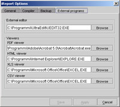

|
 |
<< Previous | Next >> | Table of Contents
2 Installing iReport
iReport comes as a zip archive. It contains the main distribution files (classes and source), some
templates for wizard, all additional required jars.
2.1 System Requirements
You'll need several things to get started with iReport:
- Sun JDK 1.4 or greater
- Ant (required if you want recompile sources, but strongly reccomended to lunch iReport too)
- JasperReports 0.4.6 (*)
- SAX 2.0 XML Parser (Apache Xerces 1.3 or later recommended) (*)
- Jakarta Commons Digester Component (version 1.1 or later) (*)
- Jakarta Commons BeanUtils Component (version 1.1 or later) (*)
- Jakarta Commons Collections Component (version 1.0 or later) (*)
- Jakarta Commons Logging Component (version 1.0 or later) (*)
- JDBC 2.0 Driver (A MySql driver is already included) (*)
- iText - Free Java-PDF library by Bruno Lowagie and Paulo Soares (*)
- Jakarta POI (version 1.5.1 or later) (*)
- JFreeChart (version 0.9.8 or later) (*)
- Acrobat Reader 5.0 is not required, but strongly recommended.
-
If you think to use Chinese Simplified, Chinese traditional, Japanese and Korean characters, you must download the Asian font pack from Adobe at: http://www.adobe.com/products/acrobat/acrrasianfontpack.html or use a localized Windows.
- If you want connect to a database, you must provide a JDBC driver (not shipped with iReport).
(*) a jar of this software is already included in the lib directory
of iReport distribution, so you have not to download it.
Note that for now JFreeChart is used to generate charts. This can be change. I'm evaluating JCharts, another OpenSource charting library. It's possible
that in future iReport will support both this libraries trought an abstract layer.
Libraries versions can change for different versions of iReport: i.e. iReport 0.3.1 comes with JasperReports 0.5.3.
2.2 Installation and configuration
If you have already installed on your machine a jdk (not simply a Java Runtime Enviroment, but a Java Development Kit) we are ready to start...
1. Unzip iReport-x.x.x.zip and copy the extracted directory where you want.
2. Look for a file called tools.jar in your jdk and copy it in the lib directory of iReport.
3.Start iReport.bat or iReport.sh.
At the first execution, iReport will create a directory (.ireport) in your home directory. Here will be stored all configuration files.
iReport use XML files for configuration.
***This files are not compatible with old 0.1.0 properties files***.
At startup all jars in the iReport lib directory are added to the classpath.
If you want use TTF Font files installed on your system, add to the classpath your fonts directory. iReport comes with an own fonts directory automatically added
to the classpath.
Started iReport...
1. go to menu->Tools->Options
2. go to tab external programs
3. set external viewers programs
|  | | Fig.2.1: The external programs options tab. |
2.3 Final test...
Ok, try if the configuration is ok....
Create a new blank report. Click on the iReport "Run without connection" button 
After few seconds will appeare our pdf opened with the program that we have set, as signal that all is OK.
<< Previous | Next >> | Table of Contents
|
|
|